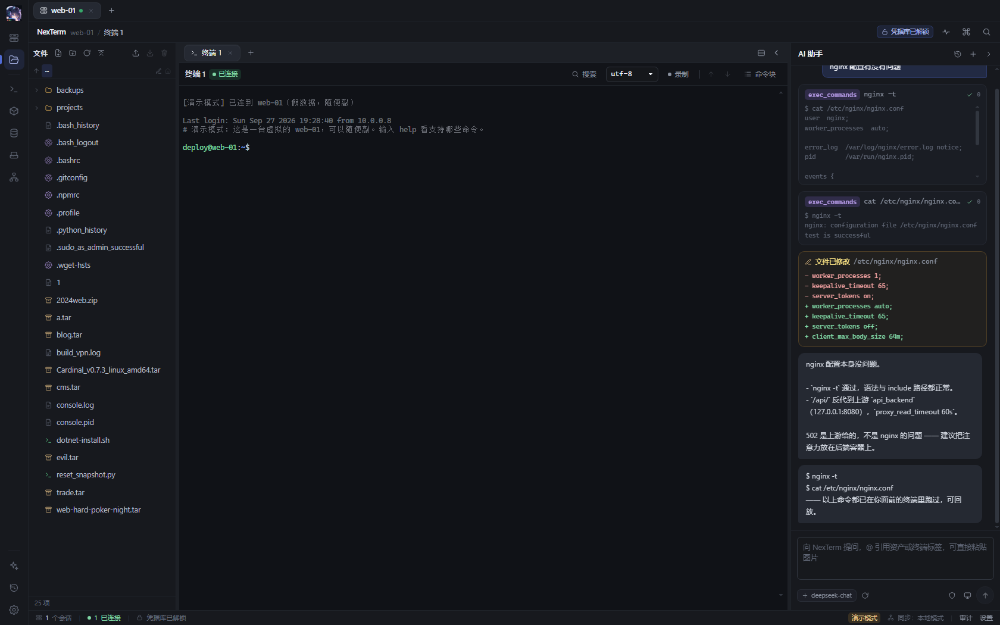
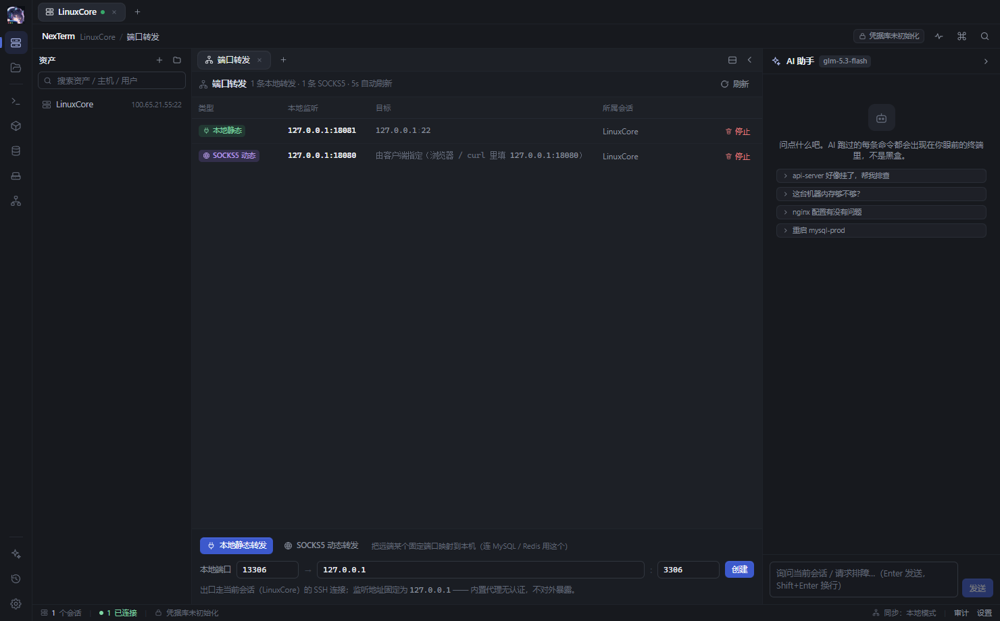

HIGHLIGHTS
为真实运维场景设计
不是功能堆叠，而是把命令、文件、数据与 AI 放进同一条工作流。
AI GUARDRAIL
AI 看得见，也管得住
AI 接在内核上，不是贴在旁边的聊天框。每一条执行都呈现在你面前，危险操作先经确认。
- 工具调用透明 —— 命令以卡片进入对话流，展开可见完整输出与退出码
- 权限护栏 —— 安全操作直接执行，敏感操作弹确认，危险命令一律拒绝
- 只读、读写、静默 三档模式随时切换
- 终端接管 —— AI 读屏、判定空闲、发送按键，按任意键立即夺回

REVIEWABLE CHANGES
每次变更都可审阅
AI 的每次写文件生成修改前后 diff，改动一目了然；接入任意 OpenAI 兼容端点，成本常驻可见。
- 文件变更 diff —— 修改前后对照，拒绝可疑改动
- 计划模式 —— AI 先给方案，确认后执行
- 多模型接入 —— 两步连接测试，端点密钥仅存本机
- 用量统计 —— 上下文用量环与缓存命中率常驻侧栏

TERMINAL & FILES
终端与文件，无缝配合
三层结构：工作区对应一台机器或一个连接，其下分屏，屏内开标签。所有标签保持挂载，切换不重连。
- 会话复用 —— 关标签不断连，断线指数退避自动重连
- 分屏工作台 —— 比例持久化，一边敲命令、一边看日志
- SFTP 虚拟滚动 —— 大目录流畅浏览，传输断点续传
- 内置编辑器 —— 查找替换、LF/CRLF、编码切换、校验和

DATA & CONTAINERS
数据与容器，触手可及
数据库、容器与网络隧道都在同一个工作区里，通过已有 SSH 会话直达内网资源。
- MySQL 工作台 —— 库表浏览、SQL 执行与结果导出
- Redis 控制台 —— SCAN 分页、类型感知查看、命令台
- Docker 管理 —— 容器终端、日志 follow、镜像与文件浏览
- 端口转发 —— 本地转发与 SOCKS5 动态转发复用会话

SECURITY
凭据在本机，加密存放
不依赖云同步，密钥与凭据只存在本机，从派生到落盘全程加密。
- 两级密钥 —— Argon2id 派生 KEK，信封加密 DEK
- 算法落位 —— 凭据以 XChaCha20-Poly1305 加密存储
- 免主密码模式 —— Windows DPAPI 绑定当前用户
- 管理面板 —— 引用关系、删除保护、日志自动脱敏
# 凭据落盘路径 主密码 ─ Argon2id ─▶ KEK KEK ─ 信封加密 ─▶ DEK DEK + XChaCha20-Poly1305 └─▶ credentials.db # 日志输出自动脱敏 connect host=10.0.0.8 auth=cred:***